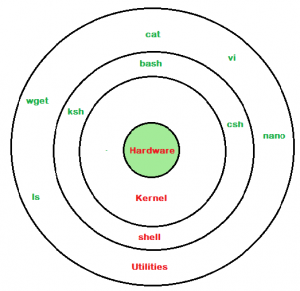

| Term | Image | Description |
|---|---|---|
| Shell |  | The shell is a command-line interface for interacting with the operating system. |
| Kernel | The kernel is the core part of the operating system, managing system resources and communication between hardware and software. | |
| Terminal |  |
The terminal is a text-based interface used to execute commands on the operating system. |